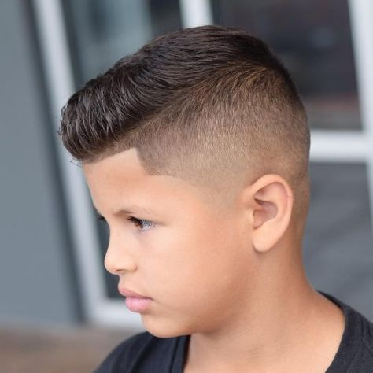
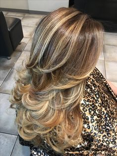
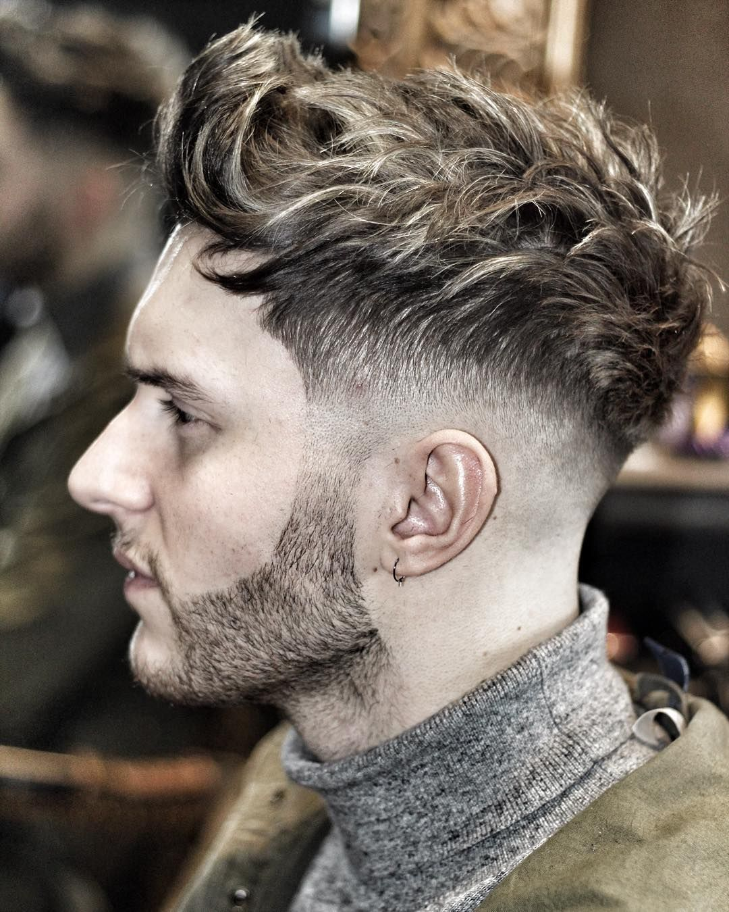

1º ONDULACIÓN PERMANENTE : Técnicas de ondulación capilar directa e indirecta.
2º DISEÑO DE MECHAS: Balayage, baby light y mechas de fantasía.
3º CORTE DE CABELLO PARA DAMAS: Corte sólido, escalonado, bod y degrafilados.
4º CORTE DE CABELLO PARA CABALLEROS: Corte con tijera, máquina, escolar, militar, barbería básica, técnicas de Fade y Técnicas de Snik Fade.
5º TINTURACIÓN CAPILAR: Mechas de fantasía, técnicas de balayage y técnicas de baby light.
|  |  |  |